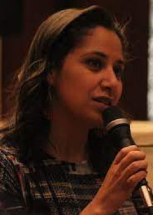
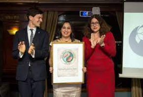

Women are silenced, in a country where they don’t have the right to talk out loud. When they speak men don’t like it.
Who is Mozn Hassan ?
Mozn hassan was born in 1979 in Saudi Arabia. She is an activist and fights for human rights. Moreover she is an egyptian feminist. At Alexandria University, she studied Greco-Roman languages. She graduated in 2002 with a human rights degree. Following her studies, she will create a feminist legal foundation. During an interview she had spoken about how challenging it is to help women rights.
Egypt is a closed country on some subjects following the events that happened in 2011 (the revolution). The country increasingly oppresses the civils, the liberties are reduced. It becomes complicated to listen. Mozn tells us being very grateful for her relationship with her mom. She says she is amazed by how she fought for her education. Indeed, she comes from a modest environment, where it was hard to access school.
Picture of Mozn Hassan.
Mozn Hassan a feminist who fight for her country
She claims feminism as "It is my ideology, my work, my struggle". It is her life's purpose, to fight for women's rights. A complicated task all over the world, even more in this country. However, she wants to act so that women can contribute like men. In terms of political changes and decisions made.
She is one of the activists who contributed to the overthrow of Mubarak. Those who wanted to fight against the usual actions of the president. Against a patriarchal country, which is almost impossible to contradict. Unfortunately, these activists are threatened financially. The government puts pressure on them. Because of her actions, she is condemned to stay in the country, she cannot flee it.
She will speak about puritanism, that is the closing of mind, the opinions closed to the discussion. She will receive the Right Livelihood Award. A prize obtained for her fights, with the will to decrease the injustices between men and women. However, the government doesn’t let it happen and organizes an interrogation to silence her. Mozn and her ONG are accused by their opponents of receiving financial aid from other countries.
Mozn Hassan receiving the Right Livelilhood Award.
Aggressive opponents...
The young woman saw these intimidations as an abuse of power. The impression that slowly the kind ways of acting are disappearing. That the opponents know only how to use the hard way, the threats. The freedoms seem to be silenced. Despite everything, Mozn Hassan is unperturbed and does not hide in the face of his opponents.
Since she has committed that the organization she created will continue to exist, no matter what the cost is. A statement implemented to support the feminist. This statement claims that the authorities must stop the accusations against the association "Nazra for Feminist Studies" (association created by Mozn Hassan).
This association has been known as an ONG since 2007. It suffers from the harassment of the opponents. Because the association fights against values that are not shared by the Egyptian authorities. Such as the freedom of human rights.